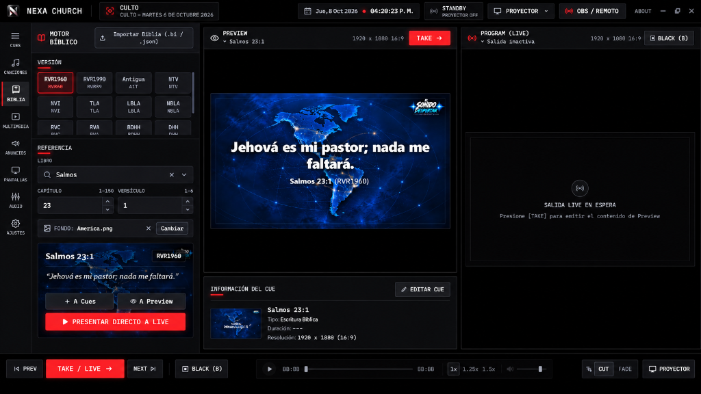

Manual de Usuario de NEXA Church
Aprende a dominar todas las herramientas de NEXA Church: desde la configuración de pantallas múltiples hasta la proyección bíblica instantánea, alabanzas con acordes, temporizadores de escenario y transmisión en vivo.
01. Introducción y Requisitos del Sistema
NEXA Church es una estación de trabajo de presentación profesional diseñada específicamente para servicios religiosos, congresos y transmisiones en vivo. A diferencia de programas genéricos o herramientas basadas en navegador, NEXA Church funciona de manera 100% local (offline), garantizando que el culto nunca se interrumpa por caídas de internet.
Requisitos Mínimos
- • Sistema Operativo: Windows 10 (64-bit) o Windows 11.
- • Procesador: Intel Core i3 (4ta gen) / AMD Ryzen 3 o superior.
- • Memoria RAM: 4 GB.
- • Almacenamiento: 500 MB libres en disco.
- • Puertos de video: 1 salida HDMI/DisplayPort para pantalla externa.
Requisitos Recomendados
- • Procesador: Intel Core i5 / AMD Ryzen 5 o superior.
- • Memoria RAM: 8 GB o superior.
- • Tarjeta gráfica dedicada o integrada con soporte DirectX 11.
- • 2 salidas de video para proyector y monitor de retorno (Stage Display).
02. Instalación y Primer Inicio
La instalación de NEXA Church es directa y no requiere bibliotecas complejas adicionales:
- Descarga el instalador oficial
NEXA_Church_Installer.exedesde la página principal. - Haz doble clic sobre el archivo ejecutable. Si Windows SmartScreen muestra un aviso, haz clic en "Más información" y luego en "Ejecutar de todas formas".
- El instalador configurará automáticamente los archivos de soporte y creará un acceso directo en el Escritorio.
- Al iniciar, el software cargará automáticamente las versiones bíblicas locales, la biblioteca de alabanza y las plantillas predeterminadas en menos de 2 segundos.
03. Interfaz y Flujo de Trabajo (Preview vs. Live)
NEXA Church utiliza una arquitectura de control inspirada en los estándares de transmisión broadcast profesional. La interfaz se divide en 3 zonas principales:

04. Motor Bíblico y Proyección de Pasajes
Diseñado para la velocidad que requiere el momento de la predicación. Puedes encontrar cualquier versículo en menos de 3 segundos mediante búsqueda por teclado.

Pasos para proyectar un versículo:
- Haz clic en el módulo BIBLIA o presiona F1.
- Selecciona la versión deseada: RVR1960, NVI, NTV, LBLA, TLA o DHH.
- Escribe el libro (ej. Salmos), capítulo (ej. 23) y versículo (ej. 1).
- Para proyectar un rango de versículos, selecciona el versículo inicial y mantén presionado Shift mientras seleccionas el versículo final (ej. Salmos 23:1-4).
- Haz clic en Presentar directo a Live para emitirlo de inmediato, o A Preview si deseas verificarlo antes.
05. Gestión de Alabanzas, Letras y Flujo Holyrics
El motor de canciones de NEXA Church combina la velocidad operativa de Holyrics con proyección panorámica 16:9 en alta definición y fondos visuales exclusivos de adoración.
Listado Limpio y Apartado Exclusivo
El cancionero presenta un listado despejado que muestra únicamente el título de la canción, artista y tono. Al hacer clic sobre cualquier canción, se abre su Apartado Exclusivo con la matriz completa de diapositivas organizadas por estrofas, coros y puentes.
Galería Ampliada de Fondos de Adoración
Incorpora una colección dedicada de fondos cinemáticos 16:9 (niebla azul con rayos dorados, nebulosas profundas, glorias doradas y santuarios etéreos) diseñados con contraste oscuro central para máxima legibilidad tipográfica. Permite cambiar el fondo en 1 clic o cargar imágenes locales desde la PC.
Atajos de Teclado Aislados (C, 1-9, P)
Al estar en el Apartado Exclusivo de una canción, los atajos operan estrictamente sobre esa canción sin interferir con otros Cues: C salta directo al Coro, 1-9 a las Estrofas correspondientes, P al Puente, → / ↓ avanzan diapositivas, Enter ejecuta el pase TAKE a Live y Esc regresa al listado.
Cues Unificados en Producción
Al agregar una canción al orden de culto con "+ CUE", se inserta como un único elemento consolidado en la lista de producción, evitando fragmentar el servicio en múltiples escenas y manteniendo la pauta pastoral ordenada.
06. Orden de Culto y Sistema de Cues
Un Cue representa un elemento individual programado para el servicio: una canción completa, una lectura bíblica, un video de bienvenida o una placa de ofrendas.
- Agregar a la lista: Desde cualquier módulo, haz clic en "+ A Cues" para añadir el elemento al orden del día.
- Reordenar Cues: Arrastra y suelta (drag and drop) los elementos en la columna izquierda para organizar el orden del culto según la pauta pastoral.
- Navegación rápida: Usa las teclas Página Arriba / Página Abajo o → para avanzar de diapositiva en diapositiva.
07. Multimedia, Fondos y Control de Audio
NEXA Church permite reproducir videos en bucle continuo (motion loops) de fondo mientras el texto bíblico o la letra de alabanza se superpone limpiamente.
Imágenes: PNG (con canal alfa/transparencia), JPEG, WebP.
Audio: MP3, WAV con control de fader en decibeles.
08. Configuración de Pantallas y Stage Display
El Stage Display (retorno de escenario) es una pantalla exclusiva orientada hacia el altar para pastores, líderes y músicos:

09. Integración con Streaming (OBS Studio / vMix)
NEXA Church permite enviar títulos y letras a tus programas de transmisión online sin necesidad de equipos adicionales:
- Abre NEXA Church y dirígete al panel de pantallas (F4).
- Activa la salida secundaria o la ventana dedicada de Clean Feed / OBS Output.
- En OBS Studio o vMix, agrega una nueva fuente de tipo "Captura de Ventana" y selecciona la salida de NEXA Church.
- Aplica un filtro de clave de color (Color Key / Luma Key) si deseas proyectar únicamente los textos como Lower Thirds (tercios inferiores) sobre la cámara en vivo.
10. Editor de Anuncios y Placas de Culto
Diseña placas informativas sobrias para los 15 minutos previos al inicio de la reunión:
- Horarios de grupos pequeños, discipulado y reuniones de jóvenes.
- Datos bancarios, códigos QR de ofrendas y sobres digitales.
- Tarjetas de bienvenida a visitantes con información de contacto de la congregación.
- Activación de carrusel rotativo con intervalo configurable (ej. cada 8 segundos).
11. Tabla de Atajos de Teclado (Cheat Sheet)
Memoriza estos atajos para operar NEXA Church como un profesional durante momentos intensos de alabanza y predicación:
| Atajo | Acción | Contexto |
|---|---|---|
| Enter | Ejecutar TAKE (Enviar Preview → Live al instante) | Salida Principal |
| → / ↓ / AvPág | Avanzar a la siguiente diapositiva de alabanza, siguiente versículo bíblico continuo, o siguiente escena del culto | Alabanza / Biblia / Cues |
| ← / ↑ / RePág | Retroceder a la diapositiva anterior de alabanza, versículo bíblico anterior, o escena previa | Alabanza / Biblia / Cues |
| C | Saltar instantáneamente al Coro de la canción activa | Alabanza en vivo |
| 1 al 9 | Saltar directamente a la Estrofa 1, 2, 3... de la canción activa | Alabanza en vivo |
| Espacio | Reproducir / Pausar video o pista de audio activa en vivo | Multimedia / Fondo |
| B | Blackout (Pantalla Negra Inmediata sin desconectar el proyector) | Emergencia en vivo |
| P | Seleccionar o enfocar la escena en Preview | Operación |
| L | Seleccionar o enfocar la escena activa en Live | Operación |
| Esc | Cerrar modales o cancelaciones | Global |
12. Solución de Problemas y Buenas Prácticas
Presiona la combinación de Windows Win + P y selecciona la opción "Extender" (nunca "Duplicar"). Luego, en NEXA Church, abre el panel de Pantallas (F4) y asigna la pantalla secundaria como salida del proyector.
Prueba con anticipación los 3 primeros cues del culto, verifica que el temporizador del altar esté reseteado y asegúrate de silenciar los sonidos de notificaciones de Windows para evitar ruidos indeseados en el sistema de sonido.
© 2026 NEXA Church • Desarrollado por Shalim Technologies.